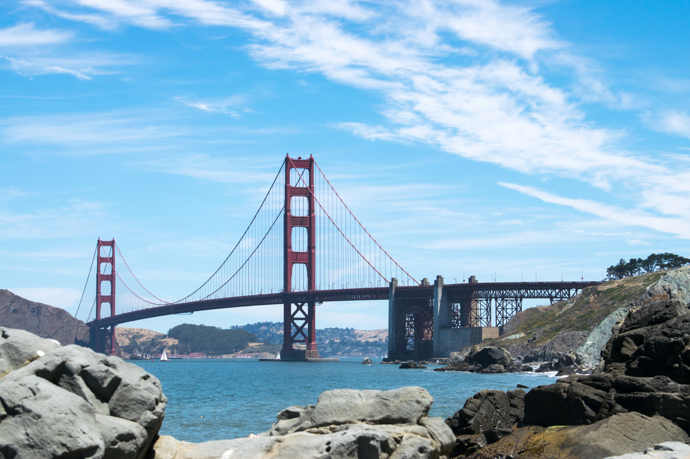
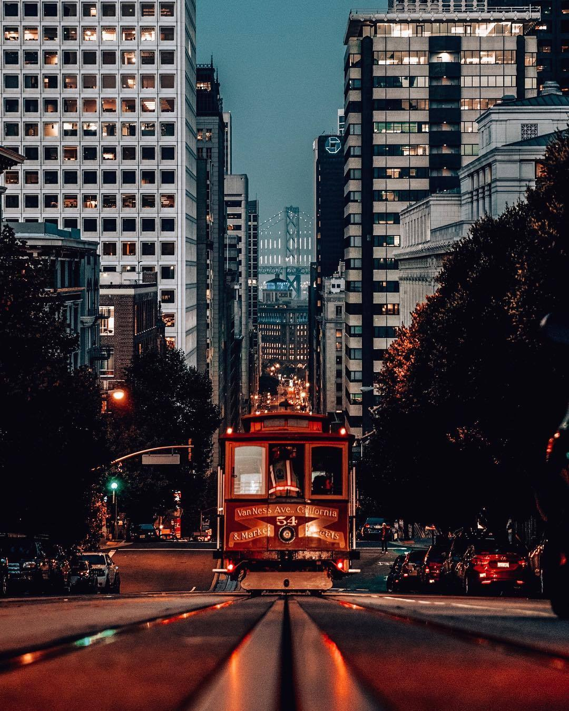

San Francisco

San Francisco is the 13th most populous city in the United States, and the 4th most populous in California, with 884,363 residents as of 2017.It covers an area of about 46.89 square miles (121.4 km2), mostly at the north end of the San Francisco Peninsula in the San Francisco Bay Area, making it the second most densely populated large US city, and the fifth most densely populated U.S.
Golden Gate
The Golden Gate is a strait on the west coast of North America that connects San Francisco Bay to the Pacific Ocean.It is defined by the headlands of the San Francisco Peninsula and the Marin Peninsula, and, since 1937, has been spanned by the Golden Gate Bridge. The entire shoreline and adjacent waters throughout the strait are managed by the Golden Gate National Recreation Area.
During the Great Depression, not a single bank in San Francisco failed. In fact, business was so good that the city constructed the Golden Gate Bridge and the Oakland Bay Bridge during the Depression.
Train
he Muni Metro is a light rail system serving San Francisco, California, operated by the San Francisco Municipal Railway (Muni), a division of the San Francisco Municipal Transportation Agency (SFMTA). With an average weekday ridership of 162,500 passengers as of the fourth quarter of 2017, Muni Metro is the United States' third busiest light rail system